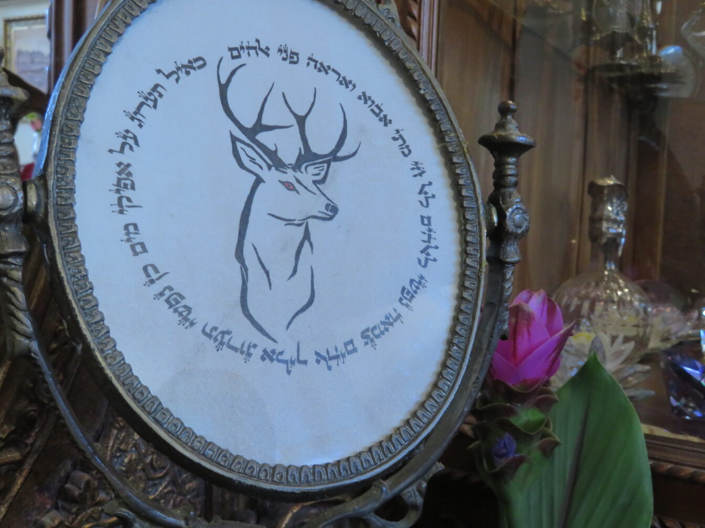

מסע אישי של סופר סת"ם בעולם הקליגרפיה, הטיפוגרפיה, והאות החיה
בס"ד
מסע אישי של סופר סת"ם בעולם הקליגרפיה, הטיפוגרפיה, והאות החיה
מאת הרב יוחאי אוחיון – סופר סת"ם ומלמד כתיבת סת"ם.
כסופר סת"ם שנים רבות,
כתבתי והשתפרתי בעזרת התבוננות ובלמידה מאחרים.
אך לפני מספר שנים כשהתחלתי ללמד כתיבת סת"ם,
שמתי לב לדבר מעניין:
יש תלמידים שיודעים לצייר את האות בדיוק לפי המידות, אבל האות… מתה.
ויש כאלה שכתיבתם עדיין לא מדויקת, אבל האות 'נושמת', יש לה תנועה, אופי, חיים.
אות לאות ספר את הסיפור שלך…
התחלתי לשאול את עצמי שאלות עמוקות:
מה נותן לאות חיים?
מה הופך אות לאות מרגשת?
ומה אפשר ללמוד מעולם הכתב שאינו כתב סת"ם
כדי לדייק את אופן הכתיבה שלנו?
כך יצאתי למסע מחקר אישי לעולם שסופרי סת"ם, כמעט לא מכירים!
תורת הקליגרפיה והטיפוגרפיה.
תו לתו נגן את הניגון שלך
כמה מילים על קליגרפיה
קליגרפיה היא מילה המורכבת משתי מילים בשפה היוונית:
- 'קאלוס' פירושו: יפה.
- 'גרפו' פירושו: לכתוב.
ביחד שתי המילים = כתיבה יפה.
אבל אם נדייק?
קליגרפיה היא לא רק יופי.
זו כתיבה חיה כתיבה שיש בה נשימה, קצב, איזון, זרימה.
הקליגרפיה עוסקת בשלושה מרכיבים עיקריים:
1. תנועה
האות נוצרת מתנועת היד – מהכתף, מהמרפק, מהנשימה. לא רק מהאצבע.
התנועה מכתיבה את אופי האות. בכתיבה החופשית – כמו בקליגרפיה – זה מורגש מיד.
2. קצב
המרחק בין האותיות, המנוחה בין קווים, החזרה על אותה תנועה – כל אלו יוצרים קצב פנימי.
אות ש'נכתבת בקצב' – מדויקת יותר, מאוזנת יותר. כמו תנועה מוזיקלית בכתב.
3. קונטרסט
הבדל בין קווים עבים ודקים – זה הקונטרסט.
זו הדרך לתת משקל, עומק, ואופי לאות.
בקליגרפיה קלאסית [כמו גם בכתיבה החופשית], הקונטרסט נוצר על ידי זויות הכתיבה, הטיית הכלי כתיבה, והשליטה בלחץ היד.
ומה זה סריפים?
סריפים (Serifs) הם הקישוטים הקטנים שבקצות האותיות,
כמו רגליים, קוצים וכדומה.
בעולם הדפוס – זה עוזר לקריאות. בעולם האמנות – זה מוסיף סגנון.
אבל בכתיבת סת"ם – הסריפים הם חלק מהאות עצמה:
תגין, עוקצים, וכדומה – הם סריפים טבעיים.
הם לא 'עיצוב' שכל סופר יכול להוסיף ליופי, אלא הם חלקים באות ונאמנות למסורת בת אלפי שנים, וכל קוץ מקורו בגבהי מרומים בשמיים ממעל.
מהי טיפוגרפיה
הטיפוגרפיה היא המשך הכתיבה בעידן המודרני
עיצוב אותיות לפונטים, ותרגומם לדפוס ומסכים.
הקו המנחה הוא שכל אות היא מודל קבוע, מכוונת להופיע שוב ושוב באחידות.
כאשר המטרה היא לייצר קריאות, אחידות.
והכל נעשה על ידי טכנולוגיה ולא בכתב יד אנושי.
מעצבי פונטים מודרנים ברור להם עד כמה הטיפוגרפיה זקוקה לשורש הקליגרפי.
והם נזהרים מאוד ומקפידים לא לאבד את הנשמה של האות.
נחדד את ההבדל בין קליגרפיה לטיפוגרפיה?
כאן הגיעה אחת התובנות הכי עמוקות שלי:
הקליגרף יולד את האות. המעצב – בונה אותה.
קליגרפיה
כתיבה ביד,
כל אות נוצרת מחדש, עם נשימה וקצב.
מתאים לכתיבה אומנותית, אותיות סת"ם, חוויה.
כתיבה מרגשת ונוגעת בנפש.
אך קשה לנו לרוץ ולקרוא את הטקסט למרחקים ארוכים…
טיפוגרפיה
מקבעת את הכתיבה למבנה קבוע,
אבל מצד שני מסייעת לקריאה ארוכה, כדי שלא נתעייף בדרך.
איך זה משפיע על פיתוח פונטים?
כאשר בונים פונט עברי, במיוחד פונטים לסת"ם או לעיצוב תורני,
ישאלו מספר שאלות חשובות:
- האם הפונט הזה 'נושם'?
- האם הוא שומר על איזון פנימי בין אות לאות?
- האם יש בו קונטרסט נכון?
- האם הוא שואב השראה מכתיבה אמיתית או שהוא רק 'העתק גראפי'?
פונט טוב – הוא תוצאה של הקשבה לאותיות החיות.
ולמה זה חשוב לסופר סת"ם?
כי מצד אחד אנחנו רוצים לראות את הרגש והאמנות בכתב [קליגרפיה].
ומצד שני אנחנו כן רוצים שיהיה קבע ומבנה [טיפוגרפיה],
כדי לסייע לקורא לגמוע מרחקים ארוכים, שלא יתעייף בקריאה.
מי שמבין את עקרונות הקליגרפיה – יודע:
- איך לאזן בין האותיות.
- איך לתת 'נשימה' בין קווים.
- איך להפוך אות מדויקת לאות חיה.
מי שמבין את עקרונות הטיפוגרפיה – יודע:
- איך לשמור על אותיות קבועות.
- קווים ברוחב שווה.
- תנועות עגולות שחוזרות על עצמם בתוך הכתב.
קורס כתיבת סת"ם במכון אמנות הסת"ם
זה בדיוק מה שאני מלמד את התלמידים בקורסים שלי
לשלב בין הדקדוק ההלכתי – לבין ההבנה טיפוגרפית-קליגרפית.
בין גוף – לנשמה של האות.
לסיכום
המעבר בין קליגרפיה לטיפוגרפיה, בין קולמוס לפונט, פתח בפניי עולם חדש – לא כתחליף לכתיבה סת"ם, אלא כהעמקה בה.
האותיות לא רק 'נכתבות נכון', הן נכתבות חכם, עמוק, וחי.
וזו הדרך שאני משתדל להעביר הלאה בקורס כתיבת סת"ם ברמה הגבוהה ביותר, והעמקה בסודות האות.
רוצה להעמיק ולצלול אל תורת אותיות הקודש?
הירשם עכשיו לקורס הקרוב, מספר המקומות מוגבל! מכון אמנות הסת"ם.
